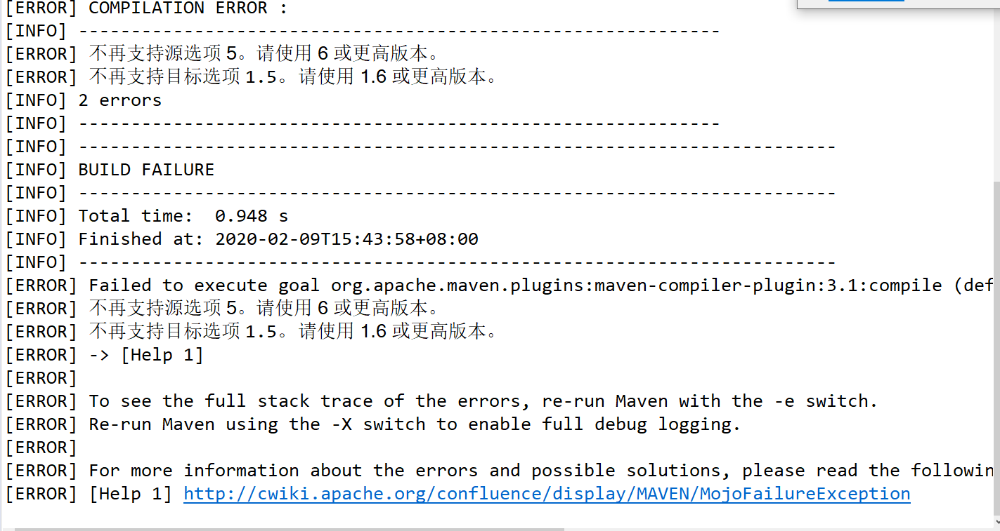
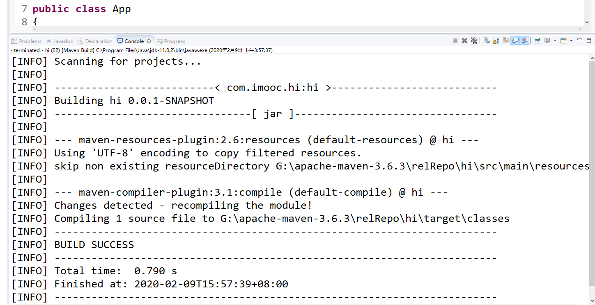

Maven在进行compile编译时控制台可能会BUILD FAILURE，并且报出以下错误：
[ERROR]不再支持源选项5。请使用6或更高版本。
[ERROR] 不再支持目标选项1.5。请使用1.6或更高版本。

找到自己项目的pom.xml配置文件，并在文件中添加maven编译时的jdk设置。
编辑pom.xml，添加以下代码配置:
<profile>
<id>jdk-11</id>
<activation>
<activeByDefault>true</activeByDefault>
<jdk>11</jdk>
</activation>
<properties>
<project.build.sourceEncoding>UTF-8</project.build.sourceEncoding>
<maven.compiler.source>11</maven.compiler.source>
<maven.compiler.target>11</maven.compiler.target>
</properties>
</profile>
因为现在我现在使用的jdk版本是11.0.2，所以写的11，大家就更据自己的情况填写。
最后再次进行clean compile，eclipse控制台显示BUILD SUCCESS。

到这里问题就已经解决了，而且如果还想要修改用户或全局的配置的话，就需要进入.m2\settings.xml或apache-maven-3.6.0\conf\settings.xml路径里的setting.xml文件中加入这段代码就可以了。